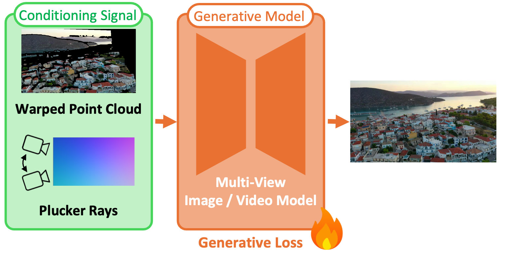
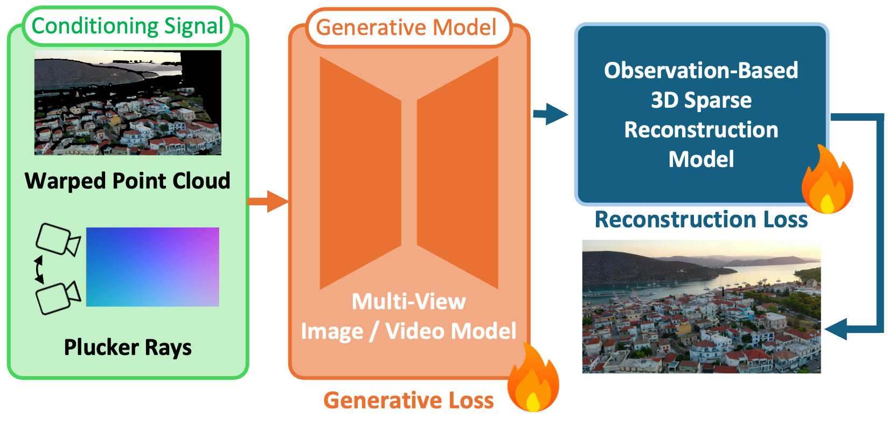
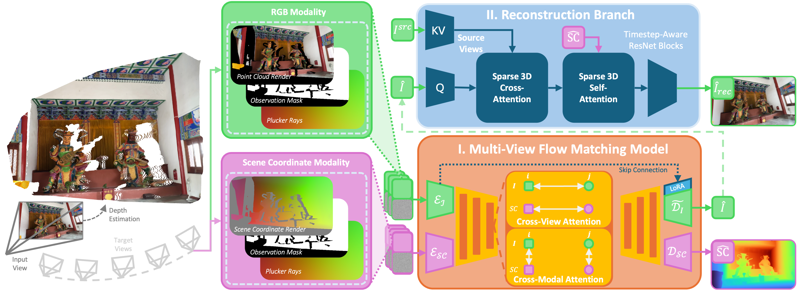

Abstract
Splitting reconstruction from generation.
Generative novel view synthesis from sparse input images is rarely all reconstruction or all generation: pixels visible in some source view have a unique correct value modulated only by view-dependent shading, while pixels in disocclusions or beyond the captured volume admit a distribution of plausible completions. Existing generative novel-view-synthesis methods conflate these regimes under a single uniform loss, blurring the line between geometric fidelity and creative hallucinations even when scene geometry is injected through warped point clouds or projected depth.
We introduce GenRec, a multi-view flow matching model that builds the reconstruction–generation split directly into its architecture, supervision, and gradient flow. Guided by an observation mask derived from the source cameras and a monocular depth estimator, a flow matching backbone jointly denoises RGB and scene-coordinate maps across all target views, while a pixel-space refinement stage restores high-frequency detail on observed pixels; the same mask gates supervision so regression signals do not contaminate the generative prior.
Across RealEstate10K, DL3DV-10K, and Mip-NeRF 360, in both single-view extrapolation and two-view interpolation, GenRec attains the best reconstruction fidelity in observed regions while also surpassing purely generative baselines on perceptual quality in unobserved ones, showing the effectiveness of our approach.
Method
One observation mask, two specialized pathways.
A novel view is rarely all generation or all reconstruction; it is a combination of both. GenRec builds this split directly into its architecture, supervision, and gradient flow, governed by a per-pixel observation mask derived from the source cameras and a monocular depth estimator.


Prior methods condition multi-view image or video models on warped point clouds or Plücker rays, supervising all output pixels with one generative loss regardless of source coverage. GenRec factors the task by an observation mask: a generative backbone predicts every pixel, and a pixel-space reconstruction module refines the observed ones under a dedicated loss. The two pathways share neither parameters nor gradients, preserving the generative prior in unobserved regions.

Given posed input views and target poses, monocular depth and forward warping produce per-target observation masks and warped renders. These condition a (I) multi-view flow matching backbone, which jointly denoises RGB and scene-coordinate latents through cross-view and cross-modal attention. A (II) reconstruction branch then refines only the observed pixels via sparse 3D attention guided by the predicted scene coordinates, while the observation mask gates gradients so the generative prior is preserved in unobserved regions.
Qualitative
Single-View Extrapolation
We showcase qualitative results from our model against GEN3C as our baseline in the single-view extrapolation setting. Drag the slider to cycle through different target views.
RealEstate10K
DL3DV-10K
Quantitative
Evaluation across benchmarks and settings.
Across RealEstate10K, DL3DV-10K, and the out-of-distribution Mip-NeRF 360, GenRec attains the best score on every column, from reconstruction fidelity in observed regions to perceptual quality in unobserved ones, while running in ~10 seconds per scene, two orders of magnitude faster than the strongest baseline. Best value per column is highlighted.
Ablation
Effect of the reconstruction branch
The pixel-space refinement stage restores the high-frequency detail that the latent generative path discards. Drag the sliders to compare output with and without it, on the full frame and on a zoomed crop.
3D Reconstruction
Single-View 3DGS Reconstruction
3D Gaussian Splatting reconstructions built on GenRec's generations from a single input view. Drag the bar beneath each row to scrub through the video.
Citation
BibTeX
@article{celen2026genrec,
title = {GenRec: Knowing Where to Reconstruct and Where to Generate},
author = {Çelen, Ata and Jung, Jaewoo and Tombari, Federico and Pollefeys, Marc and Hong, Sunghwan and Niemeyer, Michael and Barath, Daniel},
journal = {arXiv preprint arXiv:XXXX.XXXXX},
year = {2026}
}